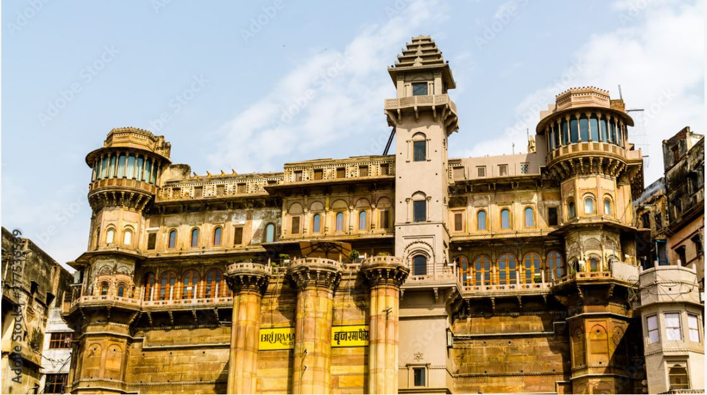
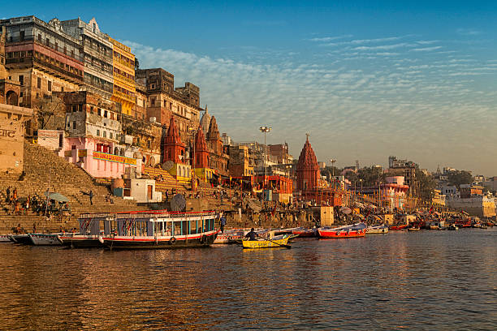
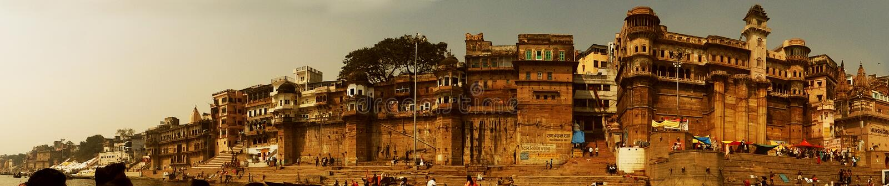
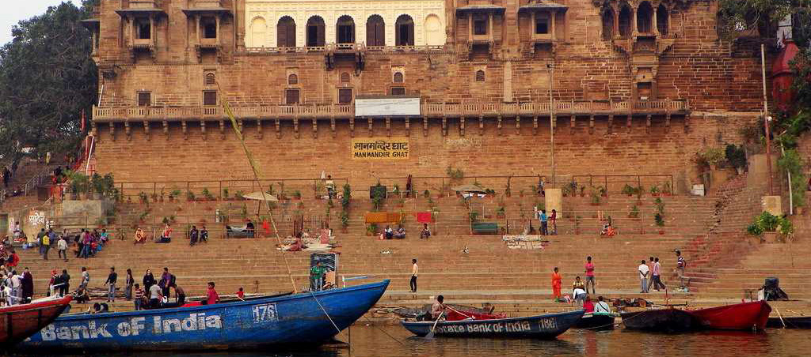
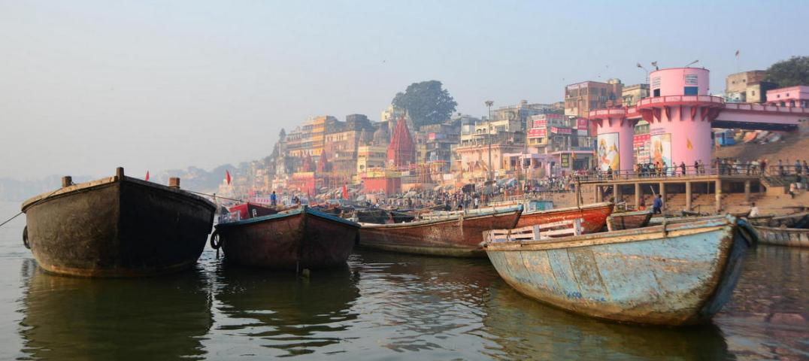

GHATS IN VARANASI
Ghats in Varanasi are riverfront steps leading to the banks of the River Ganges. The city has 88 ghats. Most of the ghats are bathing and puja ceremony ghats, while two ghats, Manikarnika and Harishchandra, are used exclusively as cremation sites.[1]
Most Varanasi ghats were rebuilt in the 18th century under the maratha patronage. The patrons of current ghats are Marathas, Shindes (Scindias), Holkars, Bhonsles, and Peshwes (Peshwas).Maharajas of Benares. Many ghats are associated with legends or mythologies while many ghats are privately owned. Morning boat ride on the Ganges across the ghats is a popular visitor attraction.
Etymology
The word ghat is explained by numerous Dravidian etymons such as Kannada gatta (mountain range) Tamil kattu (side of a mountain, dam, ridge, causeway) and Telugu katta and gattu (dam, embankment).[2]
Ghat, a term used in the Indian subcontinent, depending on the context could either refer to a range of stepped-hill such as Eastern Ghats and Western Ghats; or the series of steps leading down to a body of water or wharf, such bathing or cremation place along the banks of a river or pond, Ghats in Varanasi, Dhoby Ghaut or Aapravasi Ghat.[3][4] Roads passing through ghats are called Ghat Roads.
Popular ghat
According to the puranic sources, there are five key ghats on the riverfront, important because of their association with a defining feature of the holy city of Kashi: Assi Ghat, Dashashwamedh Ghat, Manikarnika Ghat, Panchganga Ghat, Rajendra Prasad Ghat, Adi Keshav Ghat.[5]
Assi ghat

This ghat that used to lie at the confluence of the Ganges with the dry river Asi marks the traditional southern boundary of the city. Asisangameshwar Temple at the ghat finds mention in the Kashi Khand of Skandmahapuran. This ghat is very popular because it is one of the very few ghats that is linked with the city through a wide street. It is also the major ghat that is closest to Banaras Hindu University. Assi ghat name is derived from the river Assi.
Speciality
A early morning Ganga Aarti before sunrise accompanied by shlokas and havan is definitely a divine experience.
Assi ghat has an aarti in the morning and evening
The early morning ceremony and yoga class is recommended. known as subha banaras
MUST try the lemon tea sold by little boys and get a shock by asking the recipe
Dashashwamedh Ghat
Dashashwamedh Ghat is located close to Vishwanath Temple, and is probably the most spectacular ghat. Two Hindu mythologies are associated with it: According to one, Lord Brahma created it to welcome Lord Shiva. According to another, Lord Brahma sacrificed ten horses, during Dasa-Ashwamedha yajna performed here. A group of priests daily perform in the evening at this ghat "Agni Pooja" (Worship to Fire) wherein a dedication is made to Lord Shiva,Ganges.

Speciality
Dashashwamedh ghat is famous for great event named Gange Aarti at each evening after sunset.
Some people including tourist are love to see the aarti event by sitting in a boat in the river.
maha Gange aarti held at the ghat at Kartik Purnima which attracts an unbelievable crowd.
Manikarnika ghat
Two legends are associated with Manikarnika Ghat.[7] According to one, it is believed to be the place where Lord Vishnu dug a pit with his Chakra and filled it with his perspiration while performing various penances. While Lord Shiva was watching Lord Vishnu at that time, the latter's earring ("Manikarnika") fell into the pit. According to the second legend, to keep Lord Shiva from moving around with his devotees, his consort Goddess Parvati hid her earrings and asked him to find them, saying that they had been lost on the banks of the Ganges. Goddess Parvati's idea behind the fib was that Lord Shiva would then stay around, searching forever for the lost earrings. In this legend, whenever a body gets cremated at the Manikarnika Ghat, Lord Shiva asks the soul whether it has seen the earrings.
According to ancient texts, the owner of Manikarnika Ghat bought King Harishchandra as a slave and made him work on the Manikarnika at Harishchandra Ghat. Hindu cremations customarily take place here, though a majority of dead bodies are taken for cremation to the Manikarnika Ghat.

Speciality
The Manikarnika shrine is an important place of worship for Shaktism sect of Hinduism, It is near to the Kashi Vishwanath Temple.
Mourners carrying a body
Hindu mythology teaches that the ghat is especially sacred and that people cremated there receive moksha
The well at the ghat is called Manikarnika Kund and was built by Lord Vishnu.[6]
Raj Ghat
Situated near to Kashi railway station, this is one of the famous ghats of Varanasi. This is next to the Raj Ghat bridge. Famous Ravidas temple is located on this ghat. It is also famous for Pind Daan and asthi-visarjan. Famous priests of Kashi are based here. The ghats can easily be accessed through any kind of vehicles and parking facilities are also available here. This ghat is also friendly for disabled people who can not walk through narrow lanes of Kashi.

Scindia Ghat
Also known as Shinde Ghat borders Manikarnika to the north, with its Shiva temple lying partially submerged in the river as a result of excessive weight of the ghat's construction about 150 years ago. Above the ghat, several of Kashi's most influential shrines are located within the tight maze of alleys of Siddha Kshetra (Field of Fulfillment). According to tradition, Agni, the Hindu God of Fire was born here. Hindu devotees propitiate at this place Vireshwara, the Lord of all heroes, for a son.
Maan-Mandir Ghat
Mana-Mandir Ghat: Maharaja Jai Singh II of Jaipur built this Ghat in 1770, as well as the Jantar Mantar equipped with ornate window casings along with those at Delhi, Jaipur, Ujjain, and Mathura. There is a fine stone balcony in the northern part of the ghat.

speciality
The Man Mandir Ghat is also dotted with several Hindu temples including Rameshwara Temple
Visitors can be seen relaxing and enjoying the views offered by the ghat.
Why You Should Do A Varanasi Boat Ride ?
A Varanasi boat ride is the best way to experience Varanasi. If there’s one thing you have to do in the holiest city in India, it’s this.
Early in the morning, before the first rays of sunlight have painted the sky, the boatmen of Varanasi walk to their rowboats at the banks of River Ganges. In short time, the ghats will be crowded by locals and pilgrims performing their morning prayer (puja), brushing their teeth and bathing in the holy Hindu river.

Important tips for the boat ride
When: You can do a boat ride from very early morning until Ganga Aarti that takes place by sunset. The boat rides cost more at sunrise and sunset. The best time to do a boat ride is in the morning.
Where: There are more than 100 ghats in Varanasi, and you can find a boat man for hire in almost all of them. The smaller ghats have less boats than the popular ones such as Assi ghat
What: You can hire a motor boat or a traditional rowing boat, which is controlled by a boatman. They carry up to six people. Never enter a rowing boat with more than 6 people! It’s not safe.
The First Luxury Cruise in Varanasi
On "nordic Cruise line" book your ride
The cruise route of Alaknanda Varanasi cruise service will start from Assi Ghat and continue all the way to Panchganga Ghat. In doing so, it will cover a distance of around 12 km.
You can board the Alaknanda cruise in Varanasi from the following boarding points: Alaknanda Jetty, Ravidas Park Ghat Nagwa.
The cruise fare onboard the Alakananda Varanasi Cruise is 750 INR, which also includes the GST
the morning cruise is available from 7:00 AM to 8:30 AM, the evening cruise is available from 6:00 PM to 8:30 PM.